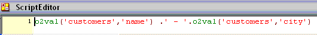
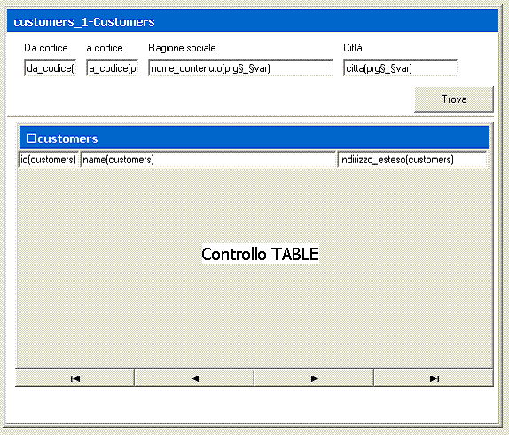

0.8 Select, calculated, criteri di range e variabili
Questo capitolo approfondisce le conoscenze del programmatore
circa la costruzione delle view che è stata solamente accennata nei
precedenti capitoli.
Obiettivi
Al termine di questo capitolo il programmatore sarà in grado di:
Definire le tabelle implicate nella query
Creare campi calcolati attribuendo expression di valorizzazione
Filtrare il recordset in base ai parametri di range
Utilizzare le funzioni di aggregazione (SUM, MAX,
MIN, AVG)
Utilizzare gli eventi della view
Introduzione
La creazione di una view in o2architect ha come unico scopo
quello di definire un dataview con il quale il programma
(tramite le action) o l’utente finale (tramite le form) potranno
interagire per raggiungere l’obiettivo funzionale.
Ogni programma o2 può contenere una o più view.
Ogni view può essere composta da campi di tabelle diverse e
residenti su database anche fra loro eterogenei.
Per affrontare in modo efficace gli argomenti di questo capitolo ci
poniamo come obiettivo quello di realizzare un programma di
consultazione e ricerca dei clienti, definendo un’ interfaccia di tipo
line e una serie di campi che l’utente potrà utilizzare per
ricercare alcuni valori all’interno della view.
0.8.1Tables in view
Creiamo un nuovo programma denominato “customers” e al suo interno
una view denominata appunto “customers”.
Definiamo adesso le tabelle delle view.
Nell'area della view indicata come Tables in view vengono dichiarate
le tabelle necessarie per la costruzione della query.
Nel nostro caso dobbiamo costruire una query che riporti i valori dalla
tabella “customers”, quindi dobbiamo aggiungere la tabella “customers” e
dichiararla Main table della view.
Ogni view o2 richiede sempre una e solo una tabella
dichiarata come Main table o come View. (Per quanto
riguarda il level View tratteremo l'argomento più avanti nel corso).
Le altre tabelle che eventualmente servano alla definizione della view
devono obbligatoriamente essere dichiarate di level Link.
Le link consentono di estendere il recordset nel numero di colonne,
agganciando al recordset principale anche le select derivanti da altre tabelle,
ma non estendono mai il recordset nel numero di record ritornati. Possono
tuttavia ridurlo se applicati dei criteri di range.
Vedremo meglio le link più avanti nel corso.
Aggiungiamo al corpo della view le select necessarie (tutte) in modo da
ottenere il seguente risultato:
0.8.2I campi calcolati (calculated)
Supponiamo di voler definire una colonna nel recordset contenente
la concatenazione di stringa dei campi che compongono l’indirizzo, per
visualizzarli come fossero un unico campo sul database.
Aggiungere alle nostre select una nuova riga (F4)
F5 (zoom) dalla colonna Type e scegliamo
Calculated
Digitare il nome del campo nella colonna Alias (stringa senza spazi
e di contenuto univoco all’interno della view)
F5 (zoom) dalla colonna Init per selezionare
l’espressione di calcolo (dal repository delle expression)
0.8.3Le espressioni (expression)
E’ doveroso, arrivati a questo punto del corso, prima di proseguire,
esprimere per la prima volta il concetto di expression del programma.
All’interno di ogni programma è possibile definire infinite espressioni
(simili alle funzioni di qualsiasi linguaggio di programmazione). Ogni espressione
è composta da:
Un indice univoco (id) con il quale sarà indicata e utilizzata
Un campo testo (illimitato nel numero di caratteri) denominato Script
(facoltativo)
Un campo testo (limitato a 255 caratteri) denominato Return e che
esprime il valore che l'espressione dovrà ritornare
Il Return di una espressione può essere una costante o il risultato di
espressioni valorizzate nello Script, utilizzando funzioni e i valori delle
variabili del programma. Ovviamente tali valori saranno determinati durante
l’esecuzione del programma dal modulo o2Runtime.
Ecco alcuni esempi di expression:
La prima ritornerà sempre la stringa “Costante alfanumerica”
La seconda ritornerà sempre il valore 100
La terza ritornerà il valore del campo “address” all’interno della view
“customers” del record selezionato in quel momento
Fatta questa premessa dobbiamo creare una nuova expression che riporti la
concatenazione di stringa tra i campi che compongono l’indirizzo del cliente. Per
fare questo:
Dalla scelta Expression creare una nuova riga (F4)
F5 (zoom) dalla colonna Return per accedere
all’area di Script
F5 (zoom) dallo script per accedere agli oggetti o2
disponibili (campi, proprietà dell’applicazione, ecc.)
Scrivere un’espressione come quella sottostante per farsi ritornare il valore
dei campi "address" e "city" concatenati

Attenzione. Lo Script e il Return delle espressioni
o2 deve essere sintassi PHP (per informazioni sul linguaggio
PHP visitare il sito www.php.net). Questo significa che all’interno delle espressioni o2 possono essere utilizzate liberamente
le funzioni che il linguaggio PHP mette a disposizione.
Dopo la definizione della suddetta expression la nostra view si presenterà nel
seguente formato:
Il riferimento “1” nella colonna Init richiama l’expression con id “1”
appena creata.
0.8.4Criteri di range (Min, Max, Not, Like)
Il programmatore può definire una espressione per ogni criterio di range
su ognuno dei campi selezionati all’interno della view al fine di filtrare il
recordset.
Le espressioni di range nelle colonne di Range sono l’unico modo
per definire i criteri di filtro all’interno del dataview completo. Le colonne di
Range sono quattro:
Min - valore minimo accettato per il campo
Max - valore massimo accettato campo
Not - valore che NON deve essere accettato per il campo
Like - valori che deve essere contenuto nel campo
Ogni riga di select all’interno della View permette l’inserimento nelle celle
Min, Max, Not e Like, posizionandosi sulla riga,
quindi sul campo, che vogliamo filtrare e premendo F5
(zoom) dalla colonna Min per selezionare l’espressione di filtro.
Se, a titolo di esempio, volessimo che il nostro programma lavorasse solamente
con clienti che abbiano un codice ("id") compreso tra il valore "10" e il valore "30"
dovremmo:
F5 (zoom) dalla colonna Min della riga dell’"id"
Creare una nuova expression (F4)
Digitare "10" nella colonna Result e selezionare l’expression
Spostarsi nella colonna Max
F5 (zoom) dalla colonna Max della riga dell’"id"
Creare una nuova expression (F4)
Digitare "30" nella colonna Result e selezionare l’expression
0.8.5Variabili del programma
Appare evidente che i filtri visti fino ad ora risolvano solo una parte del
problema, cioé quella dei filtri definiti dal programmatore. In molti casi, però,
il programmatore non può definire a priori i valori di range, ma può definire dei
criteri utilizzando le variabili del programma (variables) che, in fase
esecutiva, assumeranno dei valori (sia impostati dall’utente finale che dalle
action stesse del programma).
Ecco un esempio del risultato da ottenere:
Oltre ai campi delle view, il programmatore può definire, all’interno di ogni
programma, tutte le variabili locali che ritiene necessarie. Queste variabili sono
utilizzabili solo all’interno del programma in cui vengono definite.
Dal Navigator selezionare Variables
Per definire una nuova variabile:
Accedere alla tabella e creare una nuova riga (F4)
Digitare il nome nella colonna Alias
F5 (zoom) dalla colonna Model per selezionare
il modello
Procedere adesso autonomamente a definire le variabili che metteremo a
disposizione dell’utente finale per la ricerca dei clienti, ad esempio:
Una volta definito le variabili procedere con la creazione delle espressioni da
utilizzare nelle colonne di range della view. Al termine, la nostra view su "customers"
si presenterà nel seguente modo:
E questo sarà l’elenco delle expression:
0.8.6Creazione della form (di tipo line)
Creiamo adesso l’interfaccia utente. Come già precedentemente visto,
accedere all’area Forms dal Navigator.
Creare una nuova riga nella tabella delle form (F4)
Digitare il titolo nella colonna Title
Premere il pulsante Design per accedere all'interfaccia di
Design form
Posizionare i controlli sulla form, in particolare utilizzare il controllo
(Table control) per impostare i record
in forma tabellare. Inserendo il controllo table la procedura richiederà
a quale view associarlo (proprietà obbligatoria).
Il controllo table è un controllo in grado di contenere altri controlli,
quindi aggiungere i controlli edit all’interno della tabella e associarli ai
rispettivi campi della view.

Porre attenzione ai campi all’interno del controllo table. Oltre alla
proprietà Field è necessario impostare anche la proprietà Parent
Options che in questo caso raccoglie le proprietà della colonna della tabella.
Per ogni campo all’interno della tabella è necessario definire, attraverso la
proprietà Parent options:
La riga in cui verrà visualizzato (Line)
Da quale colonna a quale colonna (From column – To column)
L’intestazione di colonna (Label)
Gli altri campi sono facoltativi e saranno trattati nei capitoli successivi.


 (Table control) per impostare i record
in forma tabellare. Inserendo il controllo table la procedura richiederà
a quale view associarlo (proprietà obbligatoria).
(Table control) per impostare i record
in forma tabellare. Inserendo il controllo table la procedura richiederà
a quale view associarlo (proprietà obbligatoria).